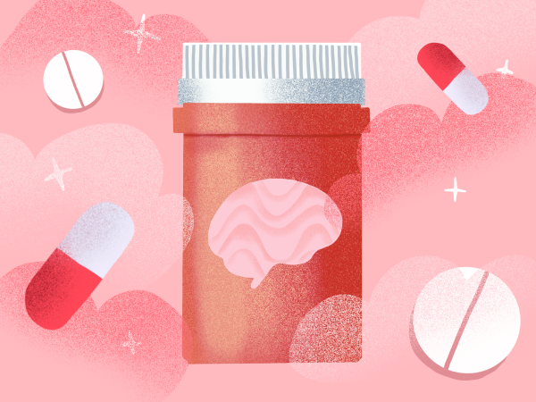

Migraine treatments fall into two primary
forms: acute, for relief
and preventive, to reduce frequency.
Acute medications
Acute medication is used during a migraine attack to relieve pain and to stop the migraine from progressing. There are three different classes of acute migraine medication:Analgesics
Over-the-counter pain relief medications like ibuprofen or acetaminophen. Used for mild attacks.
Triptans
Migraine-specific medications. Target serotonin to stop moderate-severe migraines.
Ergot alkaloids
Typically reserved for patients who don’t respond to analgesics or triptans. Block CGRP, a protein involved in migraine pain signaling.
Acute medication should not be used more than 2-3 days per week, or a patient will be at risk for medication-overuse headache, also known as rebound headache.
Preventive medications
Often used for people who are having more than four migraine attacks a month, or if attacks are very disabling. There are three categories of preventive medication:Antihypertensives
Blood pressure-lowering medications (e.g., beta-blockers or calcium channel blockers) that also reduce migraine frequency by stabilizing blood vessel activity and neuronal excitability.
Anticonvulsants
Work by stabilizing overactive neurons and inhibiting cortical spreading depression, a key mechanism in migraines.
Antidepressants
In addition to treating depression they modulate serotonin and norepinephrine pathways to reduce migraine frequency and pain sensitivity.
Consult with doctor
Because of the numerous forms of medication that exist for the treatment of migraine, the best thing a patient can do is consult a headache specialist.
References:
- American Migraine Foundation. “Understanding Migraine Mediactions”
- American Headache Society (AHS) Consensus Statement (2021)
- European Headache Federation (EHF) Guidelines (2019)